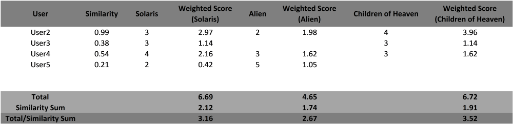

In the last post, I covered three different algorithms for calculating similarity scores. Now, lets see how these similarity scores can be used to generate User-based recommendations.
Generating User-based Recommendations
Similarity scores help us understand the similarity between different users. Now, how do we use this similarity data to actually generate recommendations?
The easiest way is to select the most similar user, User2, to a specific user, User1, and recommend those items to User1 which User2 has rated highly but User1 hasn't rated.
But, this approach has a lot of potential problems. Consider User3 and User4 to be the next most-similar users to User1. Suppose both these users give high ratings to an item itemA, that User2 has not yet rated. Thus, itemA will not show up as a recommendation to User1 even though there is a very good probability that she would rate it highly.
An extension of this problem is that User2 gives itemA a poor rating. Again, the recommendation system will not recommend itemA to User1 even though User3 and User4 rate it highly.
These issues can be solved by recommending items based on a weighted score, which is calculating by multiplying their similarity scores to their rating for that item.
Example
Let us take an example to understand this better.
Consider we have a dataset of 5 users User1, User2, ..., User5 and we have to generate recommendations for User1.
The below table shows the similarity scores of User2, ..., User5 specific to User1, the ratings for each user for three movies not rated by User1 ("Solaris", "Alien" and "Children of Heaven") and the calculated weighted score for each movie.

Thus, for User2 the similarity score is 0.99 and the rating for the movie "Solaris" is 3 . Thus, the weighted score for "Solaris" for User2 is 2.97 i.e. similarity_score * rating. Thus, the user with the higher similarity score will contribute more to the weighted score.
After calculating all the weighted scores for each user, we can then add them up to get the total weighted score for each movie.
This weighted score is then divided by the sum of the similarity scores for each user that rated that movie. This division ensures that movies that are rated by more users don't have an advantage over movies rated by less number of users.
Thus, for the movie "Children of Heaven", we divide the total weighted score by the sum of the similarities of User2, User4 and User5 since User3 has not rated the movie.
This final weighted score is used to rank the movies, which can then be recommended to User1.
Implementation
The Python code to implement this is
def genRecommendations(self, user, simAlgo, numRecs=3):
"""Generates recommendatons based on the following inputs
1. User for whom recommendations are to be provided
2. Recommendation algorithm to use
eucl - Euclidian distance
pearson - Pearson correlation
cosine - Cosine similarity
3. Maximum number of recommendations
"""
totalWeights = {}
simSum = {}
for other_user in self._ratings.keys():
if(user != other_user):
# Calculate similarity scores according to passed algorithm
# name.
sim = self._calcSimilarity(user, other_user, simAlgo)
if(sim > 0):
for movie in self._ratings[other_user]:
if movie not in self._ratings[user] and self._ratings[
other_user][movie] > 0:
totalWeights.setdefault(movie, 0)
simSum.setdefault(movie, 0)
totalWeights[movie] += sim * \
self._ratings[other_user][movie]
simSum[movie] += sim
recommMovies = [(movie, (weight / simSum[movie]))
for movie, weight in totalWeights.items()]
recommMovies = sorted(recommMovies, key=lambda x: x[1])
recommMovies.reverse()
recommMovies = [(i + 1, self._items[movies[0]])
for i, movies in enumerate(recommMovies[:numRecs])]
return recommMovies
The complete implementation of the User-based recommendation system can be found on Github.
The data that I have tested against is the MovieLens Dataset provided by GroupLens. For ease of access, I have added the relevant data files in the above GitHub repository.
Conclusion
The User-based recommendation system is widely used but it does present problems when it comes to scalability. In this system, the similarity scores have to be re-computed every time a user rates a new item. Thus, for millions of users, the rate of re-computation will be very high. Additionally, the amount of processing to be performed in each computation will be huge.
There are ways to alleviate these problems by offload the processing to a batch application or by calculating the weighted score with only the top N most similar users, but these approaches don't solve the fundamental scalability problems of this type of system.
Nowadays, projects mostly use this system as an initial implementation since it is easy to implement and works well with small datasets. As the project evolves and matures, the User-based recommendation system is replaced with more powerful alternatives.